Префектура Киото · Окадзаки · ремесло
Музей традиционных ремёсел Киото: 74 ремесла города под одной крышей
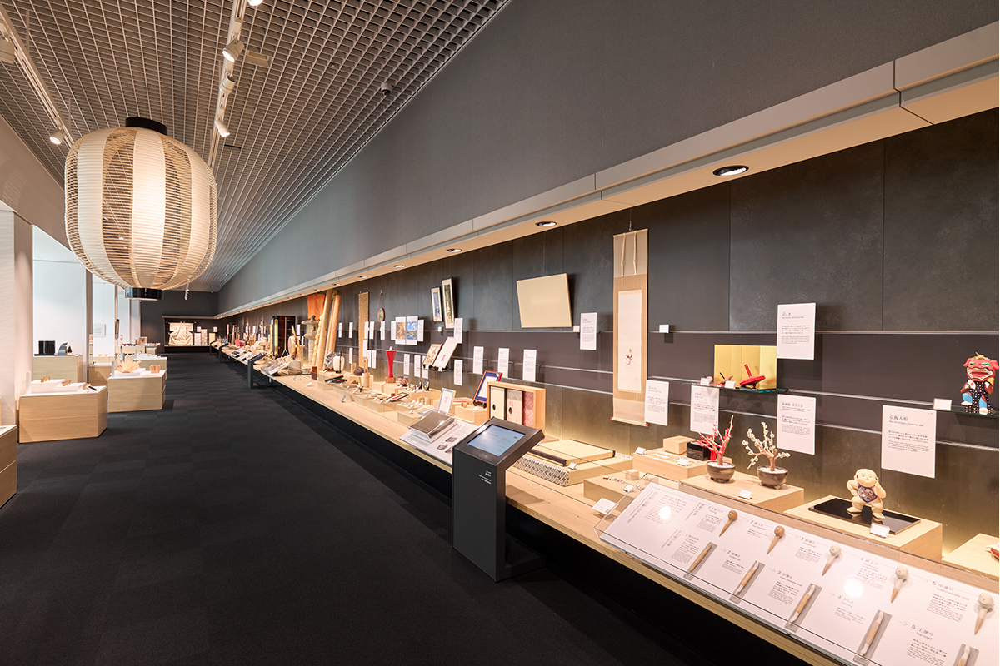
Под выставочным центром в районе Окадзаки прячется музей, с которого стоит начинать знакомство с Киото. Здесь собраны все 74 ремесла, которые город признал своим наследием, от парчи и лака до сакэ и маринованных овощей.
Музей
С чего начать Киото
Район Окадзаки на востоке Киото знают по святилищу Хэйан-дзингу и городскому художественному музею. По соседству стоит выставочный центр «Мияко Мессэ», здание, которое город построил для поддержки местной промышленности. В его подземном этаже работает Музей традиционных ремёсел Киото. Туристы о нём знают мало, хотя именно отсюда удобнее всего начинать прогулки по городу.
Больше тысячи лет, с эпохи Хэйан, Киото был столицей. Сюда съезжались мастера со всей страны, и здесь делали вещи, без которых не обходилась жизнь двора, храмов и горожан. Киото считают центром японских ремёсел, но мало кто знает, что в 2005 году город официально признал традиционными 74 отрасли, и 17 из них имеют ещё и государственный статус.
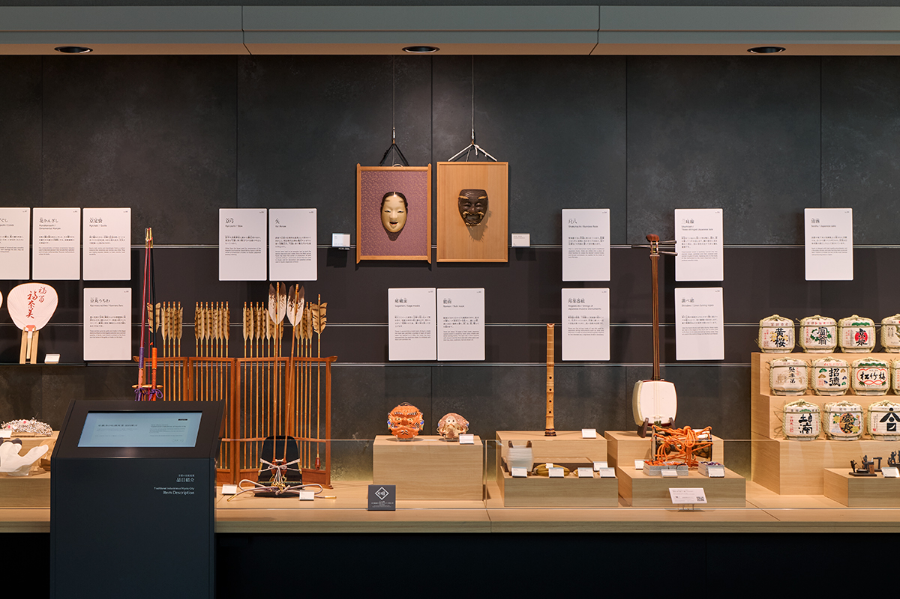
Музей показывает все 74. Здесь есть ткани, от нисидзин-ори до росписи юдзэн, и изделия мастеров: домашние буддийские алтари, лаковая посуда, складные веера, бумага караками, сямисэны и струны для традиционных инструментов. Есть и еда: сакэ, киотские сладости, маринованные овощи цукэмоно и киотская кухня. Рядом с каждой вещью рассказано, откуда она взялась и чем отличается. Можно посмотреть редкую съёмку того, как ткут нисидзин-ори на ручном станке, а работу многих ремёсел, которые делятся на этапы между разными мастерами, объясняют образцы и инструменты для каждого шага.
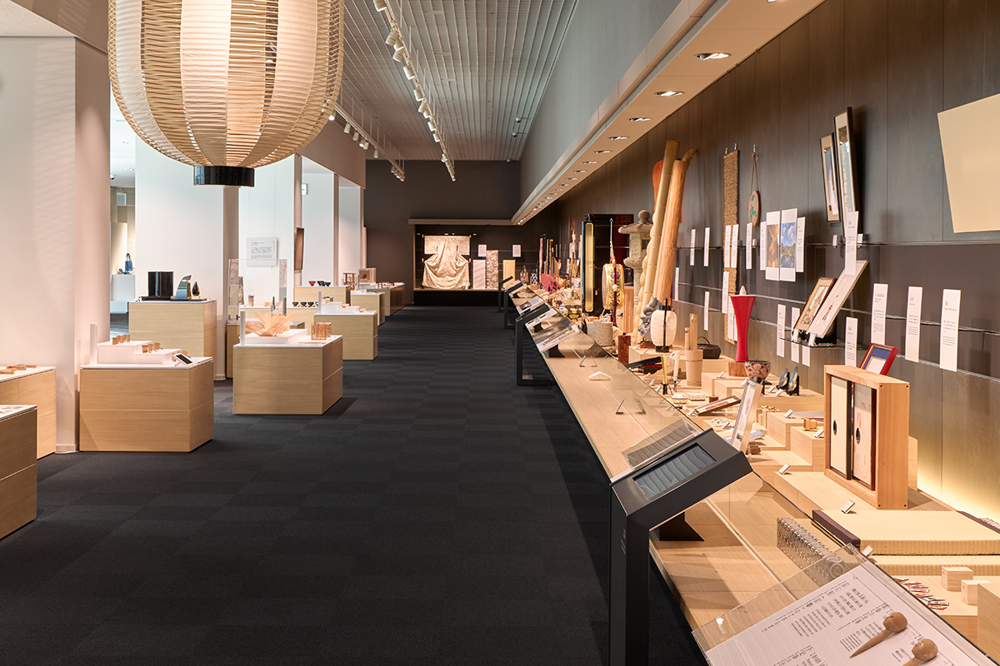
Для некоторых из 74 ремёсел в городе осталась одна мастерская, а то и ни одной. Поэтому статус традиционной отрасли здесь не просто почётное звание.
«Мы нарочно признаём эти ремёсла традиционными, чтобы сохранить ценное мастерство, которое Киото должен беречь, и передать его следующим поколениям»
директор музея
Город
Ремесло, которое видно на улицах
Кто приезжает в Киото, обязательно заходит в храмы и святилища. Когда солнце падает на раздвижные двери фусума, на них начинают мерцать узоры: листья павловнии, тыквы-горлянки. Это караками, бумага с узором, напечатанным краской на основе слюды.
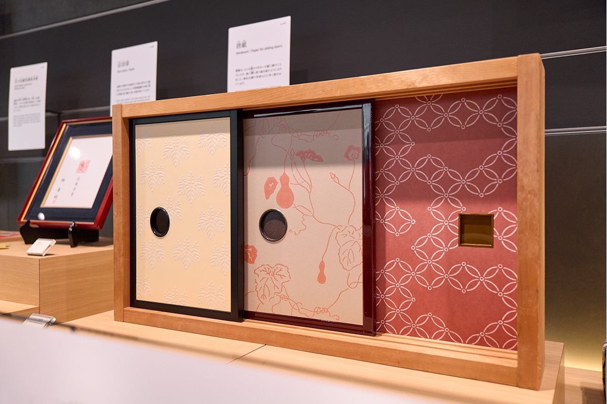
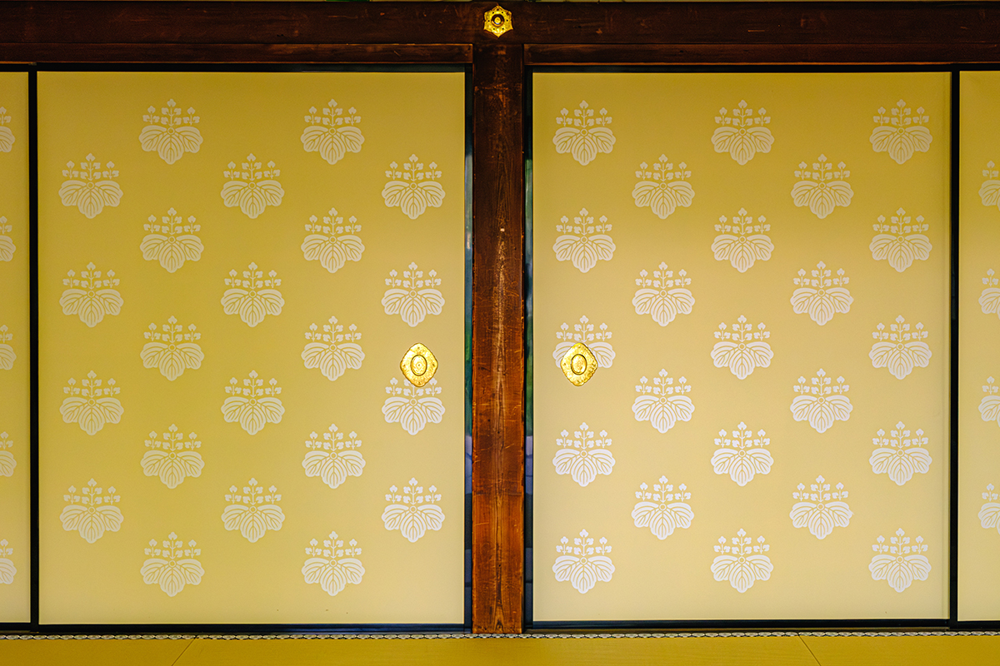
В эпоху Хэйан на такой бумаге записывали стихи. В эпохи Камакура и Муромати её стали клеить на фусума, и она украсила императорский дворец, дома знати, храмы и святилища. Мастерские с историей в несколько сотен лет хранят сотни старинных досок и до сих пор печатают узоры вручную. Караками в Киото встречается в старых зданиях, а иногда и в современных офисах, так что прохожий часто видит её, сам того не зная.
В Киото множество больших и малых святилищ и много праздников. Для них нужны облачения и утварь синто, и это тоже гордость местных мастеров. Так называют одежду, которую в эпоху Хэйан носили знатные люди, а сегодня надевают при дворе и на обрядах служители святилищ, и всё, что нужно для праздников: мечи, зеркала, золотые украшения для переносных святилищ микоси.
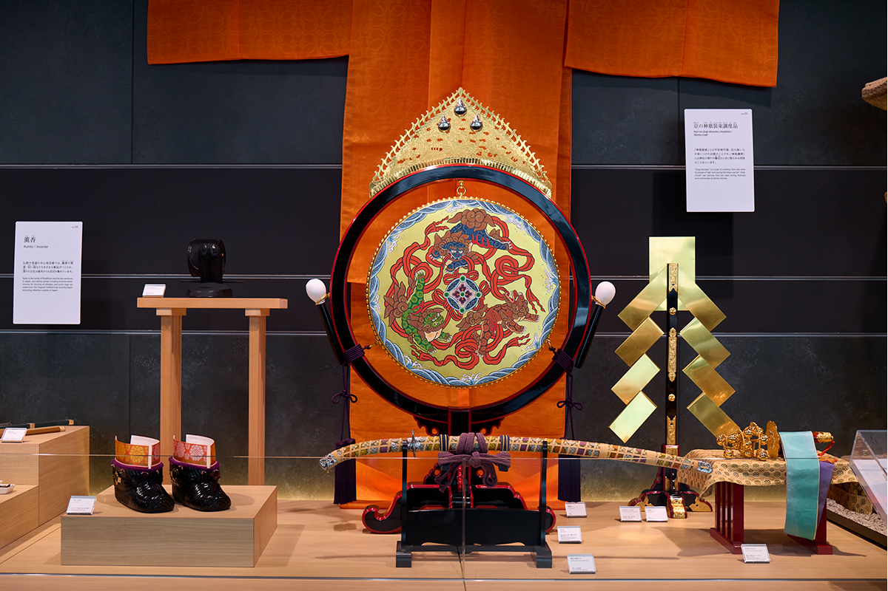
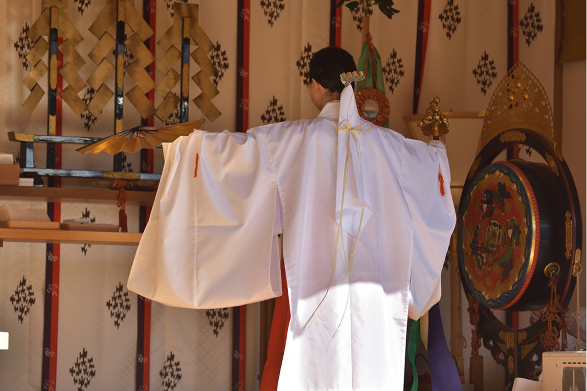
«Говорят, около 80 процентов всех предметов для обрядов синто в Японии делают в Киото»
директор музея
Каждую деталь мастера воспроизводят по записям конкретного святилища, отдельно для каждого обряда.
В рётэй, куда киотцы собираются на праздники, почти всегда подают еду в киотской лаковой посуде. Её делают примерно в 16 этапов: очистка лака, деревянная основа, грунт, шлифовка, верхний слой, роспись золотом маки-э. Каждый этап ведёт отдельный мастер.
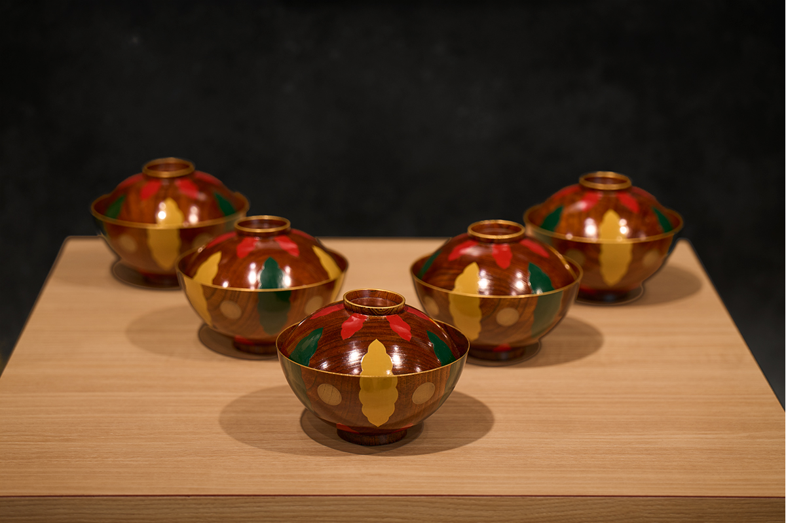
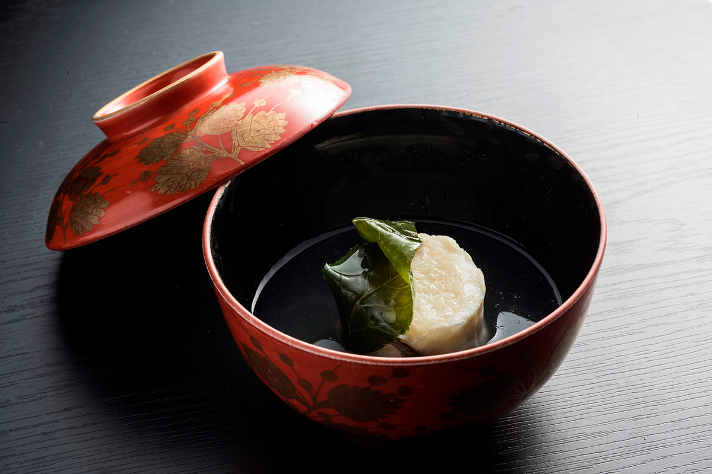
«Мастер, закончив свою часть, передаёт вещь следующему. Если сработать небрежно, следующему будет трудно, поэтому никто не халтурит. Так в Киото делали вещи раньше, так делают и сейчас»
директор музея
Без разделения труда не обходятся и ткани, которыми славился город. Киото когда-то называли городом, где разоряются на нарядах. Ткачи нисидзин-ори с эпохи Муромати соревновались, кто вытчет узор роскошнее.
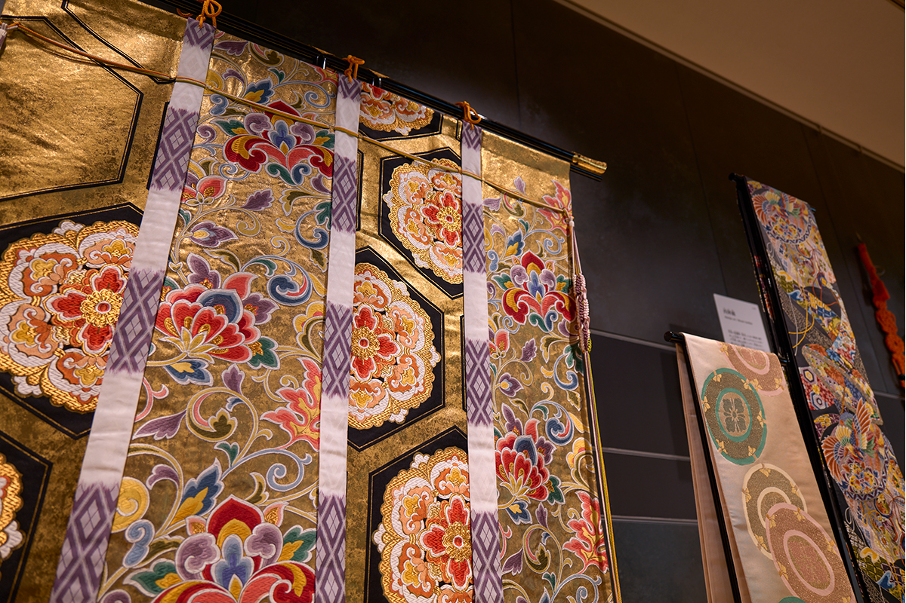
В новое время из Франции привезли жаккардовые станки, и тонкие узоры стало можно ткать быстро. Из нисидзин-ори шьют кимоно и костюмы для кабуки и театра но, украшают платформы ямабоко праздника Гион-мацури, делают гобелены. Куда ни посмотри, Киото украшен вещами ручной работы.
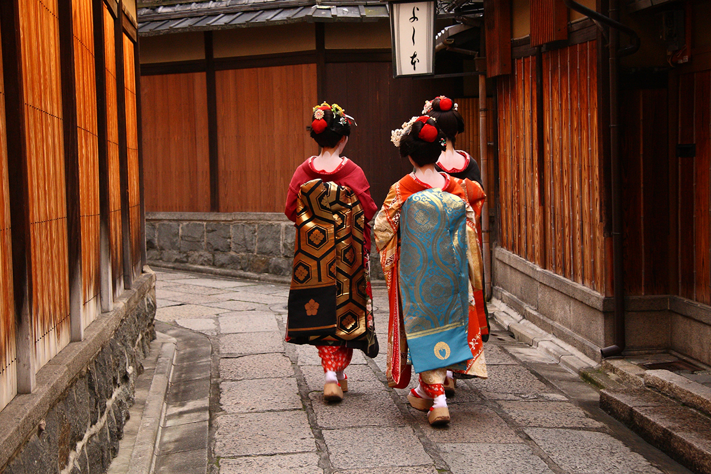
От обычного музея этот отличается тем, что у части экспонатов есть ценник. Одни цены кажутся понятными для такой работы, другие удивляют скромностью.
«Музей находится в здании, которое построено ради развития промышленности, это его настоящая задача. Бывает, к нам обращаются люди, которые хотят купить изделие мастера, но не знают где, и мы их сводим»
директор музея
Здесь видно, что ручная работа в Киото жива до сих пор, и после такого начала город хочется рассматривать внимательнее.
Витрины
Семь ремёсел из 74
Киотский юдзэн
Юдзэн это роспись по ткани. Узор либо рисуют кистями и щётками (тэгаки-юдзэн), либо наносят через трафарет (ката-юдзэн). Ручная роспись проходит больше десяти этапов: эскиз, подготовительный рисунок, нанесение рисовой пасты-резерва, раскраска узора, окрашивание фона, пропаривание и промывка, когда смывают лишнюю краску и пасту. Каждый этап ведёт свой мастер, и в экспозиции вся цепочка видна целиком.
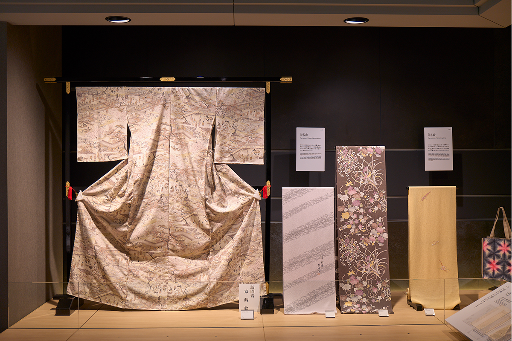
Керамика кё-яки и киёмидзу-яки
Посуду в Киото делали ещё до эпохи Хэйан, но городом гончаров он стал с эпохи Адзути-Момояма. Мастера собрали приёмы со всей Японии и переняли многое у старого китайского фарфора, поэтому киотская керамика отличается разнообразием техник и яркой росписью.
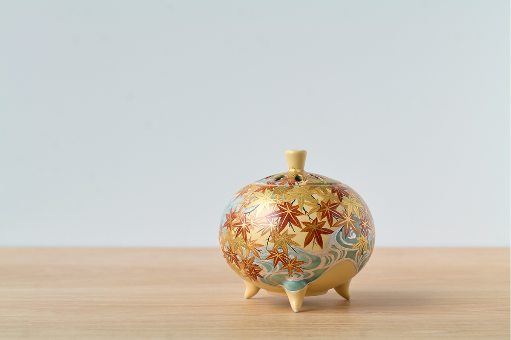
Бамбук
Изделия делают из гибкого бамбука, который растёт в горах вокруг Киото. По преданию, в чайную церемонию бамбук пришёл благодаря Сэн-но Рикю: мастер увидел рыбацкую корзину и стал ставить в неё цветы. Сегодня из бамбука делают вазы для икэбаны и украшения для дома.
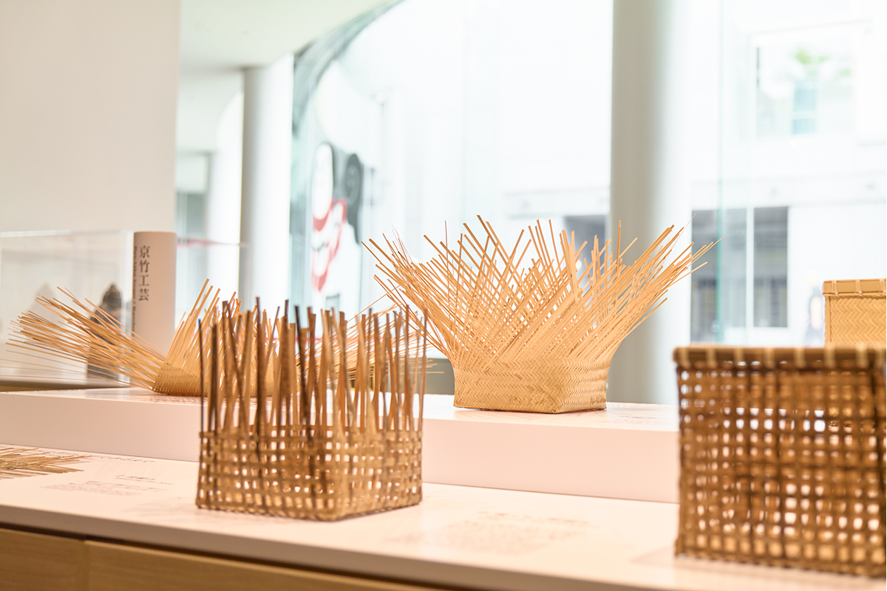
Складные веера сэнсу
Складной веер придумали в Японии около IX века, и он развивался в быту знати. Кроме летнего веера, который просто спасает от жары, есть веера для танца, для театра но и других искусств, а также декоративные.
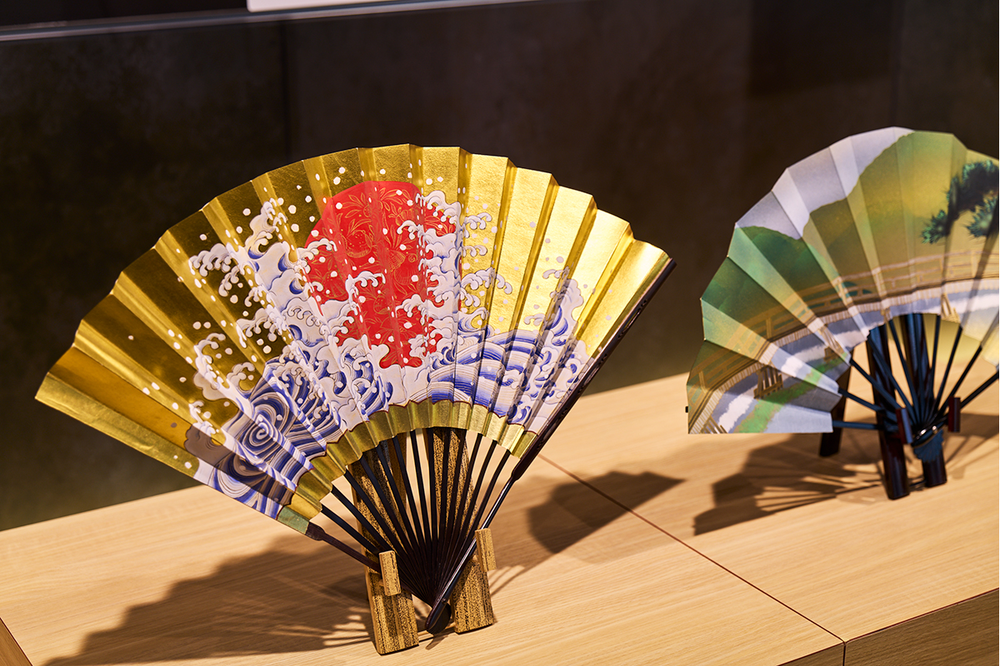
Плетёные шнуры кумихимо
Шёлковые нити сплетают в шнур на особом станке. Сначала кумихимо украшали придворные одежды эпохи Хэйан, а поскольку шнур тонкий и прочный, его стали использовать в доспехах и утвари. Сегодня из него делают завязки для пояса оби и вещи для интерьера.
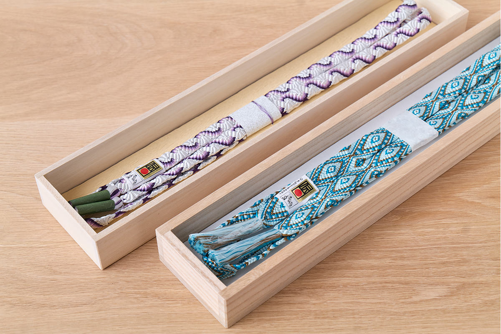
Буддийская утварь
Металлическая и деревянная утварь для храмов и домашних алтарей бывает самой разной, но всю её делают по технологиям, которые восходят к эпохе Хэйан. Чистый звон чаши орин сделал её популярной в Японии и за границей, этому помогла и мода на практики осознанности.
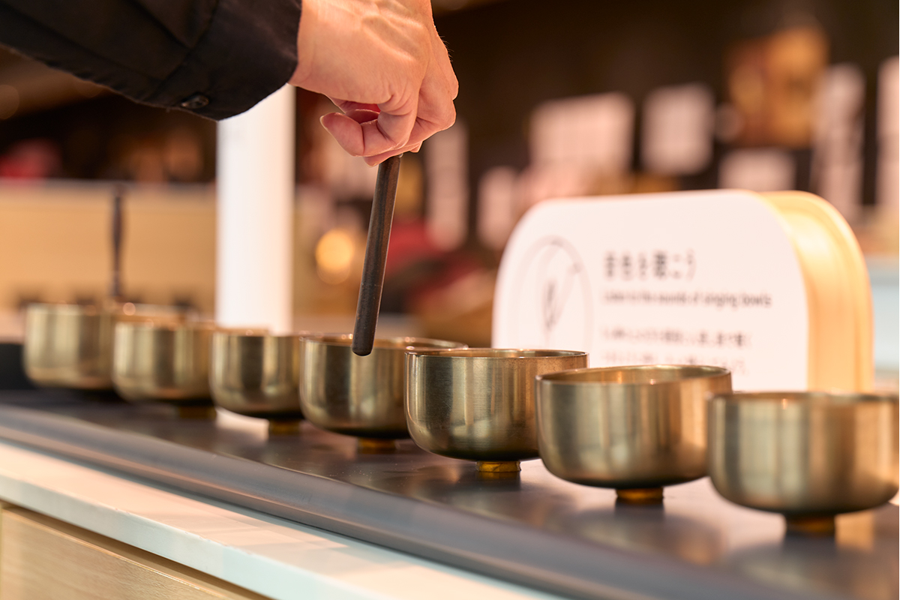
Сёки на черепице
Киотская черепица известна мягким серебристым блеском и бывает примерно 700 видов, от черепицы с маской демона до краевой. Особое место среди них занимает Сёки, глиняная фигурка на крышах старых киотских домов матия. Это божество из китайского предания, защищающее от бед.
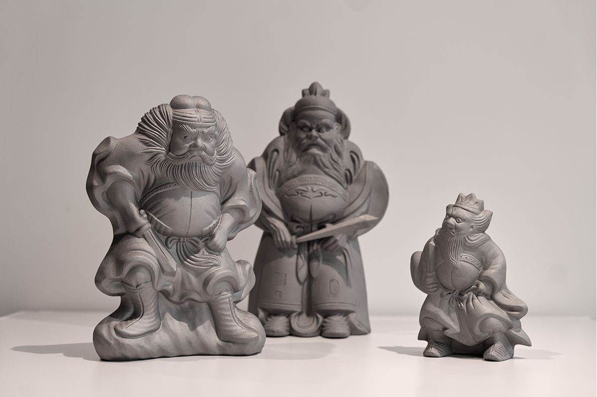
Сегодня
Ремесло завтрашнего дня
Ремёсла в Киото не только хранят, но и пробуют применить по-новому. Это видно в галерее и магазине MOCAD и в зале временных выставок. Часть пространства открыта бесплатно, туда можно зайти мимоходом.
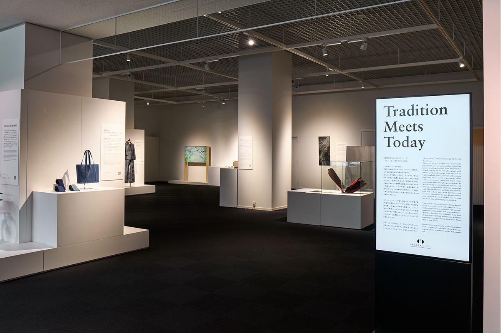
Зал в самой глубине музея называется «Tradition Meets Today». В нём выставляют смелые работы на старых техниках. Например, сумку из кожи, на которую перенесли тонкую технику ткачества нисидзин-ори, или фарфоровую лампу: гончара увлекли киотские сладости, которые фигурно надрезают ножницами, и он стал так же резать глину. Экспозицию меняют раз в полгода.
В уголке показов действующие мастера и художники работают на глазах у гостей: керамисты, мастера по ткани и по лаку.
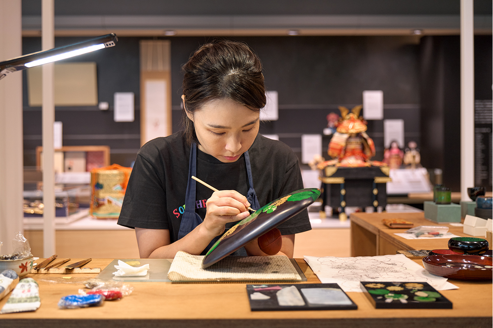
В 2025 году в музее показали работы конкурса «TRADITION for TOMORROW». Его устраивают ради передачи традиционной культуры, и участвуют в нём студенты художественных вузов, мастера и ремесленники.
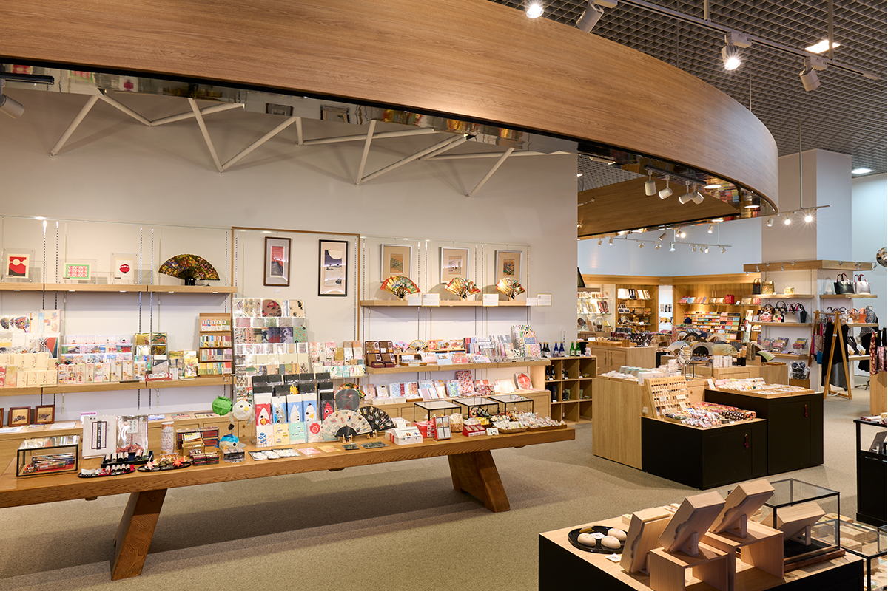
Музей традиционных ремёсел Киото
- Адрес
- префектура Киото, Киото, район Сакё, Окадзаки Сэйсёдзи-тё, 9-1, выставочный центр «Мияко Мессэ», подземный этаж
- Телефон
- +81 75-762-2670
- Часы работы
- 10:00–18:00 (вход до 17:30)
- Выходные
- нерегулярно, около двух дней в месяц
- Цены / Вход
- взрослые 500 иен, школьники 400 иен
- Сайт
- kmtc.jp
Фото: Марико Тая, PIXTA, Центр поддержки СМИ города Киото.